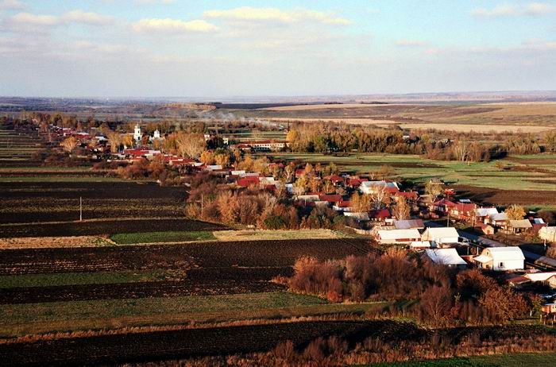

Природа моей Родины

Моя Родина - это Россия. Я родился и вырос в прекрасном селе Мишуково, Чувашия.
Природа моей Родины вдохновляет меня каждый день. От красивых летних закатов до волшебных зимних восходов.
Чувашия – это настоящий край чудес. Тут переплетаются древняя и современная культуры. Здесь великолепные озера и реки, безграничные степи и леса.
Приезжайте и открывайте для себя красоту этих мест, наслаждайтесь разными видами отдыха, которые будут приведены далее:
- Рыбалка
- Охота
- Активный туризм
- Прогулки на природе